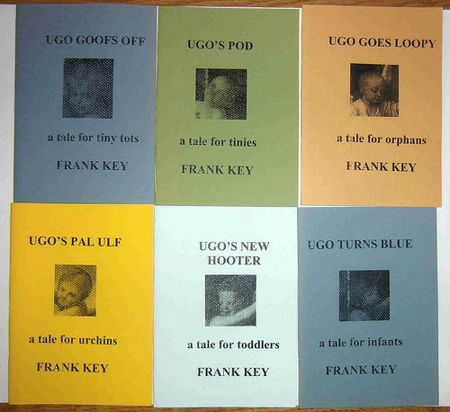

Saturday, March the 19th, 2011
back to: title, date or indexes
Look!

This is the set of six exceedingly rare out of print pamphlets available to the highest bidder in this weekend's fundraiser auction on ResonanceFM. There are many more splendid items for which you can empty your pockets, so go here for further details.
The Ugo books contain heart-wrenching tales of Ugo and his blind Ma and his pal Ulf, set in the old town of Plovdiv. They are fully illustrated with black and white reproductions of details from some of the masterpieces of Western art. Each book, originally published in an edition of, I think, just twelve copies in 2004, is signed by the author and a dedication to the successful bidder will be added before they're popped in the post.